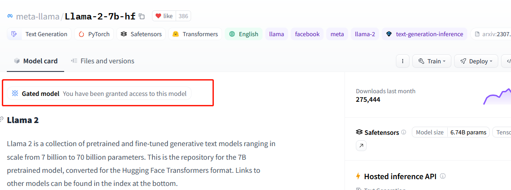

Access state-of-the-art Large Language Models & APIs
Table of Contents
It is common to evalute existing LLMs under certain benchmarks. This article is a summerization of some of the existing state-of-the-art language models.
1. Overview
| Name | is_official | is_API | Device | Proxy |
|---|---|---|---|---|
| openai | Y | Y | both | Y |
| Bard | N | Y | both | Y |
| Claude | N | Y | both | N |
2. APIs
2.1. GPT-3.5-turbo (ChatGPT) & GPT-4
- OS: Unbuntu 18.04, also works in Linux mint, Windows, and other environments
- Device: both
- link: https://github.com/openai/openai-python
- proxy: yes
Usage to evalute the politness:
# pip install openai import openai import os def reference_one_sample(text): openai.api_key=os.getenv("OPENAI_KEY") past_msg_ls=[] past_msg_ls.append({"role":"user", "content":text}) res=openai.ChatCompletion.create(model="gpt-3.5-turbo", messages=past_msg_ls, ) resp=res["choices"][0]['message']['content'] return resp def main(): res=reference_one_sample("fuck your mother. your son of bitch.") print(res) return 0
2.2. Bard
- OS: Unbuntu 18.04, also works in Linux mint, Windows, and other environments
- Device: both
- link: https://github.com/dsdanielpark/Bard-API
- proxy: yes
- is official: NO
- original app link: https://bard.google.com/
Usages:
# pip install bardapi from bardapi import Bard import os def inference_one_sample(text): token_bard=os.getenv("BARD_KEY") print(token_bard) proxies = { 'http': 'http://username:pswd@ip:port', 'https': 'http://uname:pswd@ip:port' } session = requests.Session() session.headers = { "Host": "bard.google.com", "X-Same-Domain": "1", "User-Agent": "Mozilla/5.0 (Windows NT 10.0; WOW64) AppleWebKit/537.36 (KHTML, like Gecko) Chrome/91.0.4472.114 Safari/537.36", "Content-Type": "application/x-www-form-urlencoded;charset=UTF-8", "Origin": "http://bard.google.com", "Referer": "http://bard.google.com/", } session.cookies.set("__Secure-1PSID", os.getenv("BARD_KEY")) bard = Bard(token=token_bard, session=session, proxies=proxies, timeout=30) res=bard.get_answer(text)['content'] print(res) def main(): inference_one_sample("1+1=?")
How to obtain the __Secure-1PSID ?
- Sign up or log into the website https://bard.google.com/ in webbrowser.
- Open development kits, like
Ctrl-Shift-I - find this value in cookies, may be stored in your variables.
using time.sleep(60*15) to control the access frequency to one time per 15 minutes.
2.3. Claude
NOTE: for claude I use the slack API to send/receive messages to/from the claude chatbot in slack.
- OS: Unbuntu 18.04, also works in Linux mint, Windows, and other environments
- Device: both
- link: none
- proxy: not required
- is official: NO
- original app link:
- docuement of use slack API
2.3.1. Step 1: set on slack, to obtain a access token to slack as well as a APP ID of your claude chatbot
lookup this article: blablabla
2.3.2. Step 2: use the API of claude
Usages:
import os import requests # pip install slack-sdk from slack_sdk import WebClient from slack_sdk.errors import SlackApiError class SlackClient(WebClient): CHANNEL_ID = None CLAUDE_BOT_ID=os.getenv("CLAUDE_BOT_ID") def chat(self, text): if not self.CHANNEL_ID: raise Exception("Channel not found.") resp = self.chat_postMessage(channel=self.CHANNEL_ID, text=text) self.LAST_TS = resp["ts"] def get_reply(self): for _ in range(150): try: resp = self.conversations_history(channel=self.CHANNEL_ID, oldest=self.LAST_TS, limit=2) msg = [msg["text"] for msg in resp["messages"]\ if msg["user"] == self.CLAUDE_BOT_ID] if msg and not msg[-1].endswith("Typing…_"): return msg[-1] except (SlackApiError, KeyError) as e: print(f"Get reply error: {e}") raise Exception("Get replay timeout") def open_channel(self): response = self.conversations_open(users=self.CLAUDE_BOT_ID) self.CHANNEL_ID = response["channel"]["id"] def forward(text): client = SlackClient(token=os.getenv("SLACK_USER_TOKEN")) client.open_channel() client.chat(text) reply = client.get_reply() print(f"Claude: {reply}\n--------------------") ## running entry if __name__=="__main__": # infer_one("hello! nice to meet you!") # infer_one("hello! nice to meet you!") forward("do you know budda?")
using time.sleep(60*5) to control the access frequency to one time per 5 minutes.
3. LLMs
3.1. Llama & Llama2
you can use llama.cpp to run different version of LLAMA models.
- OS: Linux recommanded
- Device: GPU recommanded
- link: https://github.com/ggerganov/llama.cpp
- proxy: not required
- is official: NA
First compile this repository in your device:
# clone to local git clone https://github.com/ggerganov/llama.cpp cd llama.cpp # vanilla compile make # other types of compile to supports GPU. ## cuda # make LLAMA_CUBLAS=1 ## Apple device # LLAMA_METAL=1 make
If you execute this code on your server (e.g. in Ubuntu), you make see some errors due to the compiler, on which you should first update the gcc version by
sudo apt install gcc-Version gcc-Version-multilib g++-Version g++-Version-multilib sudo update-alternatives --install /usr/bin/gcc gcc /usr/bin/gcc-Version 50 sudo update-alternatives --install /usr/bin/g++ g++ /usr/bin/g++-Version 50
you can replace "Version" in above commands into the gcc version like 9, and use the new compiler.
Before you make, you may need to execute make clear to clear the compile cache.
While the make procedure is DONE, then you will find a execute file named main in your directory, and you can check it with
export model_path="your llama model path" export llama_path="your main file path" export query="hello, whats your name?" $llama_path -m $model_path -p $query
using ${llama_path} --help to lookup all options:
usage: ./main [options] options: -h, --help show this help message and exit -i, --interactive run in interactive mode --interactive-first run in interactive mode and wait for input right away -ins, --instruct run in instruction mode (use with Alpaca models) --multiline-input allows you to write or paste multiple lines without ending each in '\' -r PROMPT, --reverse-prompt PROMPT halt generation at PROMPT, return control in interactive mode (can be specified more than once for multiple prompts). --color colorise output to distinguish prompt and user input from generations -s SEED, --seed SEED RNG seed (default: -1, use random seed for < 0) -t N, --threads N number of threads to use during computation (default: 40) -p PROMPT, --prompt PROMPT prompt to start generation with (default: empty) -e process prompt escapes sequences (\n, \r, \t, \', \", \\) --prompt-cache FNAME file to cache prompt state for faster startup (default: none) --prompt-cache-all if specified, saves user input and generations to cache as well. not supported with --interactive or other interactive options --prompt-cache-ro if specified, uses the prompt cache but does not update it. --random-prompt start with a randomized prompt. --in-prefix-bos prefix BOS to user inputs, preceding the `--in-prefix` string --in-prefix STRING string to prefix user inputs with (default: empty) --in-suffix STRING string to suffix after user inputs with (default: empty) -f FNAME, --file FNAME prompt file to start generation. -n N, --n-predict N number of tokens to predict (default: -1, -1 = infinity, -2 = until context filled) -c N, --ctx-size N size of the prompt context (default: 512) -b N, --batch-size N batch size for prompt processing (default: 512) -gqa N, --gqa N grouped-query attention factor (TEMP!!! use 8 for LLaMAv2 70B) (default: 1) -eps N, --rms-norm-eps N rms norm eps (TEMP!!! use 1e-5 for LLaMAv2) (default: 5.0e-06) --top-k N top-k sampling (default: 40, 0 = disabled) --top-p N top-p sampling (default: 0.9, 1.0 = disabled) --tfs N tail free sampling, parameter z (default: 1.0, 1.0 = disabled) --typical N locally typical sampling, parameter p (default: 1.0, 1.0 = disabled) --repeat-last-n N last n tokens to consider for penalize (default: 64, 0 = disabled, -1 = ctx_size) --repeat-penalty N penalize repeat sequence of tokens (default: 1.1, 1.0 = disabled) --presence-penalty N repeat alpha presence penalty (default: 0.0, 0.0 = disabled) --frequency-penalty N repeat alpha frequency penalty (default: 0.0, 0.0 = disabled) --mirostat N use Mirostat sampling. Top K, Nucleus, Tail Free and Locally Typical samplers are ignored if used. (default: 0, 0 = disabled, 1 = Mirostat, 2 = Mirostat 2.0) --mirostat-lr N Mirostat learning rate, parameter eta (default: 0.1) --mirostat-ent N Mirostat target entropy, parameter tau (default: 5.0) -l TOKEN_ID(+/-)BIAS, --logit-bias TOKEN_ID(+/-)BIAS modifies the likelihood of token appearing in the completion, i.e. `--logit-bias 15043+1` to increase likelihood of token ' Hello', or `--logit-bias 15043-1` to decrease likelihood of token ' Hello' --grammar GRAMMAR BNF-like grammar to constrain generations (see samples in grammars/ dir) --grammar-file FNAME file to read grammar from --cfg-negative-prompt PROMPT negative prompt to use for guidance. (default: empty) --cfg-scale N strength of guidance (default: 1.000000, 1.0 = disable) --rope-scale N RoPE context linear scaling factor, inverse of --rope-freq-scale (default: 1) --rope-freq-base N RoPE base frequency, used by NTK-aware scaling (default: 10000.0) --rope-freq-scale N RoPE frequency linear scaling factor, inverse of --rope-scale (default: 1) --ignore-eos ignore end of stream token and continue generating (implies --logit-bias 2-inf) --no-penalize-nl do not penalize newline token --memory-f32 use f32 instead of f16 for memory key+value (default: disabled) not recommended: doubles context memory required and no measurable increase in quality --temp N temperature (default: 0.8) --perplexity compute perplexity over each ctx window of the prompt --hellaswag compute HellaSwag score over random tasks from datafile supplied with -f --hellaswag-tasks N number of tasks to use when computing the HellaSwag score (default: 400) --keep N number of tokens to keep from the initial prompt (default: 0, -1 = all) --chunks N max number of chunks to process (default: -1, -1 = all) --mlock force system to keep model in RAM rather than swapping or compressing --no-mmap do not memory-map model (slower load but may reduce pageouts if not using mlock) --numa attempt optimizations that help on some NUMA systems if run without this previously, it is recommended to drop the system page cache before using this see https://github.com/ggerganov/llama.cpp/issues/1437 --mtest compute maximum memory usage --export export the computation graph to 'llama.ggml' --verbose-prompt print prompt before generation --simple-io use basic IO for better compatibility in subprocesses and limited consoles --lora FNAME apply LoRA adapter (implies --no-mmap) --lora-base FNAME optional model to use as a base for the layers modified by the LoRA adapter -m FNAME, --model FNAME model path (default: models/7B/ggml-model.bin)
If you have no LLAMA checkpoints, you can access from the LLAMA page, or download the quantization version from this man, what I have used is the llama2-7B with int8 here such as

Beyond the interactive mode of llama.cpp, you might hope to use it as a API, it is not supports until now, but I simply write a synchronous API for my research and experiements. where the python code can be shown as:
import subprocess def inference_llama2(sent): llama="/home/liangzi/llama.cpp/main" model="/home/liangzi/models/llama2/llama-2-7b-chat.ggmlv3.q8_0.bin" scripts=f""" {llama} -m {model} -p "Please response to the question of user. User: {sent} Answer: " """ result = subprocess.run(scripts, shell=True, capture_output=True).stdout.decode("utf8") if "Answer: " in result: result=result.split("Answer: ")[1] if "User" in result: result=result.split("User")[0] print(result) return result
This is very simple, you can write your own version to support more complicated functions.
3.2. By candle, to obtain llama & llama2 & falcon
candle is a ML framework in Rust, by huggingface.
- OS: Linux recommanded
- Device: GPU recommanded
- link: https://github.com/huggingface/candle
- proxy: not required
- is official: NA
Compared to llama.cpp, using candle is easier.
- you need have a recent stable
rustenvironment in your system to compile candle. - clone the repository with: git clone https://github.com/huggingface/candle
- running one of the example commands:
cargo run --example whisper --release
cargo run --example llama --release
cargo run --example falcon --release
cargo run --example bert --release
cargo run --example bigcode --release
cargo run --example stable-diffusion --release --features image -- --prompt "a rusty robot holding a fire torch"
When I use candle, I face the problem:
Error: request error: https://huggingface.co/meta-llama/Llama-2-7b-hf/resolve/main/tokenizer.json: status code 401
Caused by:
https://huggingface.co/meta-llama/Llama-2-7b-hf/resolve/main/tokenizer.json: status code 401
which is caused by the access permission of pre-trained models.
Take llama2 as an example, you may should first acess this model in huggingface's website :

you cannot use this model until you got a similar granted texts as mine.
Then, install huggingface_hub , where you might install it already if your python environment has transformers or other huggingface's packages.
Use huggingface-cli login and insert your access token. If you have no token just lookup here.
Above solution comes from this issue.